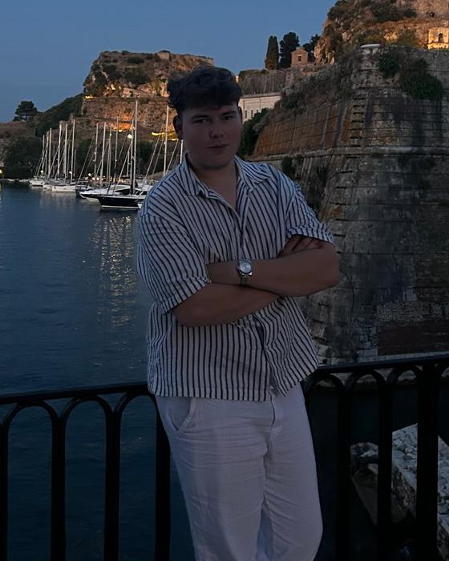

Beschikbaar voor nieuwe projecten
Ik bouw heldere, snelle websites voor lokale zaken in Vlaanderen. Geen jargon, geen abonnement waar je niet uit raakt — gewoon een site waar klanten je vinden, bellen en boeken.
Voorbeelden
Dit zijn concepten die ik zelf ontwierp — geen echte klanten. Ik start net, dus ik toon je liever eerlijk werk dan valse logo's. Kies een type zaak:
Ambachtelijk brood en patisserie in hartje Mechelen. Bestel je zuurdesem online en haal het warm af.
Bestel je brood →Voorbeeldconcept — geen echte klant
Voorbeeldconcept — geen echte klant
Voorbeeldconcept — geen echte klant
Voorbeeldconcept — geen echte klant
Wat je krijgt
Acht op de tien mensen bekijken je site op hun telefoon. Daar begin ik mee, niet achteraf.
Lokale SEO en je Google Bedrijfsprofiel juist ingesteld, zodat je opduikt bij “bakker in de buurt”.
Laadt in minder dan twee seconden. Trage sites kosten je klanten nog voor ze je zaak gezien hebben.
Heb je nog geen teksten? Ik schrijf ze. Je foto's zet ik professioneel op hun plaats.
Een formulier dat rechtstreeks in je mailbox komt. Of online afspraken, als dat bij je zaak past.
Ik regel je .be-naam en de hosting. Jij hoeft nergens in te loggen.
Na de oplevering verdwijn ik niet. Een vraag of een kleine aanpassing? Je belt gewoon.
Hoe het werkt
Twintig minuten, aan de telefoon of bij jou in de zaak. Ik luister, jij beslist nog niets. Gratis.
Je krijgt één heldere prijs en een datum. Ga je niet akkoord, dan stopt het hier — zonder kosten.
Je ziet tussentijds hoe je site groeit en zegt gerust wat je anders wil. Twee rondes feedback zitten erbij.
Ik zet alles live, koppel je domein, en toon je hoe je zelf dingen aanpast.

Over mij
Een goede website is niet goed omdat hij mooi is. Hij is goed omdat je klanten vinden waarvoor ze kwamen.
Ik ben Robbe Rooijakkers. Ik bouw websites voor lokale zaken in Limburg — bakkers, loodgieters, kinesisten, restaurants. Mensen die uitstekend zijn in hun vak, maar geen geduld hebben voor bureaus die in afkortingen praten.
Ik werk alleen. Dat betekent dat de persoon met wie je spreekt ook de persoon is die je site effectief bouwt — van het eerste gesprek tot lang nadat hij online staat.
Contact
Elke zaak is anders, dus ik hang er geen vaste prijslijst aan. Vul dit in en je krijgt binnen één werkdag een voorstel op maat — of gewoon een moment om even te bellen.
Liever direct?
robbe.rooijakkers@gmail.com
+32 487 29 45 02
Ik bekijk je bericht en laat binnen één werkdag iets weten.
Beweging